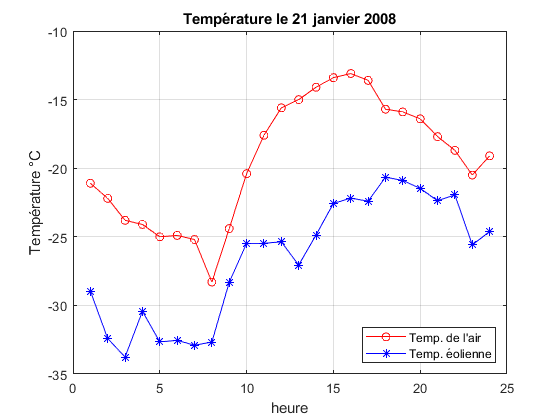

Refroidissement éolien en janvier
Contents
Lecture
clear;close all;clc T=load('TempC.txt'); [nr,nc]=size(T);
Température la plus froide du mois
imin=1; jmin=1; for i=1:nr for j=1:nc if(T(imin,jmin)>T(i,j)) imin=i; jmin=j; end end end fprintf(['À %.0fh le %.0f janvier, ',... 'T = %.1f °C.\n\n'],jmin,imin,T(imin,jmin)); somme=0; for j=1:nc somme=somme+T(imin,j); end fprintf(['La température moyenne du jour ',... '= %.1f °C.\n\n'],somme/nc);
À 6h le 25 janvier, T = -29.2 °C. La température moyenne du jour = -16.1 °C.
Extrait
fprintf(... 'Jour 1h 6h 11h 16h 21h\n'); for i=1:5:31 fprintf('%4d',i); fprintf('%7.1f',T(i,1:5:21)); fprintf('\n') end
Jour 1h 6h 11h 16h 21h 1 -5.4 -6.0 -3.3 -3.4 -4.0 6 -2.3 -1.3 1.0 1.0 2.3 11 -4.2 -2.9 0.8 1.9 2.3 16 -11.8 -11.0 -10.3 -9.4 -15.3 21 -21.1 -24.9 -17.6 -13.1 -17.7 26 -9.7 -10.4 -9.5 -7.8 -15.6 31 -10.3 -11.3 -8.5 -7.2 -15.8
Calcul du refroidissement éolien
V=load('Vents.txt'); V10m=V(21,:); T_air = T(21,:); h = 1:24; R = 13.12 + 0.6215.*T_air ... - 11.37.*V10m.^0.16 ... +0.3965.*T_air.*V10m.^0.16; fprintf('\nVecteur R (refroidissement éolien) :\n'); for i=1:6:length(R) fprintf('%7.1f',R(i:i+5)); fprintf('\n') end
Vecteur R (refroidissement éolien) : -29.0 -32.4 -33.8 -30.4 -32.7 -32.5 -32.9 -32.7 -28.3 -25.5 -25.5 -25.4 -27.1 -24.9 -22.6 -22.2 -22.4 -20.7 -20.9 -21.5 -22.4 -22.0 -25.6 -24.6
Graphique des températures
plot(h,T_air,'ro-', h,R,'b*-'); grid on; xlabel('heure');ylabel('Température °C'); title('Température le 21 janvier 2008'); legend('Temp. de l''air','Temp. éolienne',... 'Location','SouthEast');
